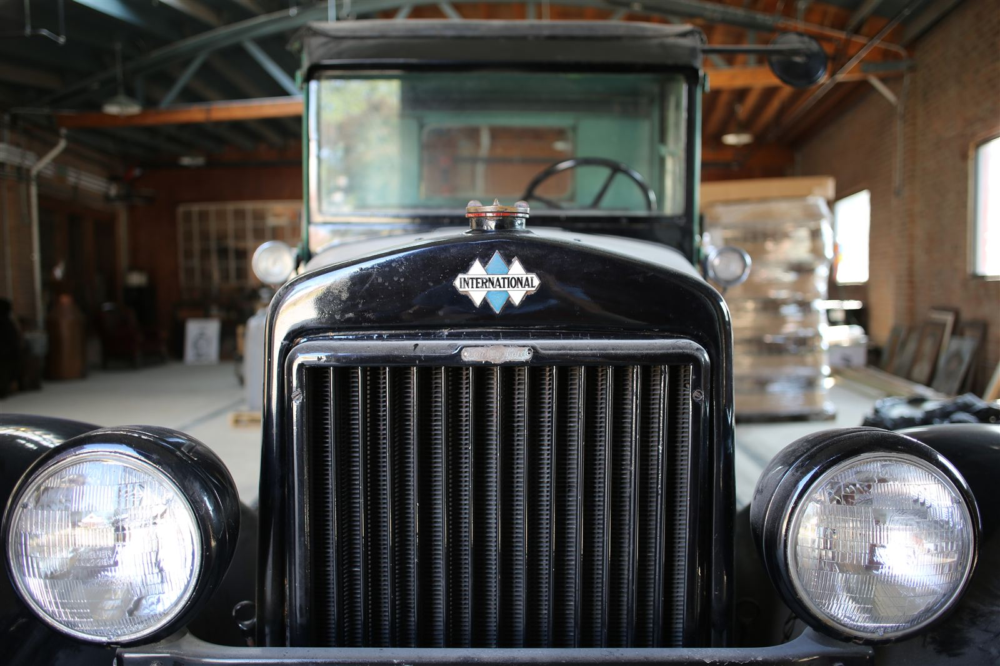

Thornton Distilling
Est. 1857 · Thornton, Illinois
Reserve
Drop in for a cocktail, book a tour, or just walk the limestone halls. Located 30 minutes south of downtown Chicago in the village of Thornton.

400 E Margaret St · Thornton, IL30 minutes south of downtown Chicago via I-94 South. On-site parking is free.
Wed–Thu 4–9 pm
Fri 4–11 pm
Sat 12–11 pm
Sun 12–9 pm
Closed Mon & Tue.
45–60 minute distillery tours include a guided history walk through the building, a look at the still, and a tasting flight.
$15 per person · Ages all welcome · 21+ for tasting · Limited to 12 guests.
Original 1857 limestone, hand-built equipment, and the artesian well — still flowing. The shop carries Dead Drop and the new American Single Malt on-site.
Craft cocktails poured with our own spirits, alongside chef-driven plates. Walk-ins welcome; reservations recommended for parties of 6+.
Weddings, corporate galas, and private dinners — 20,000 sq ft of limestone and brick across multiple rooms. Inquire for dates.